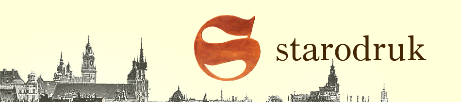
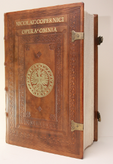
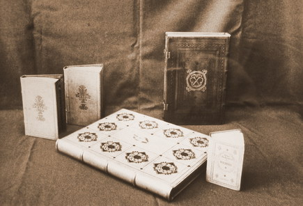
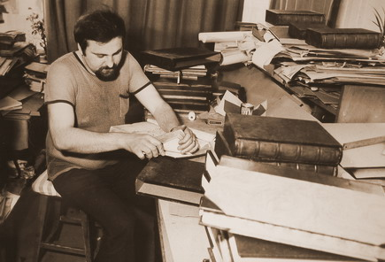
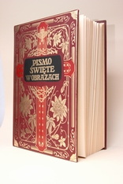
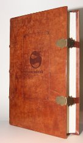
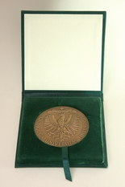
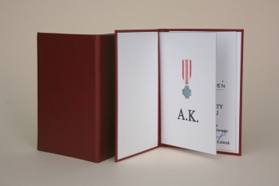
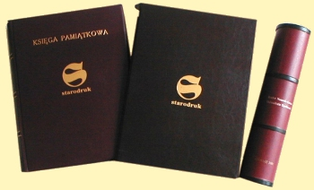
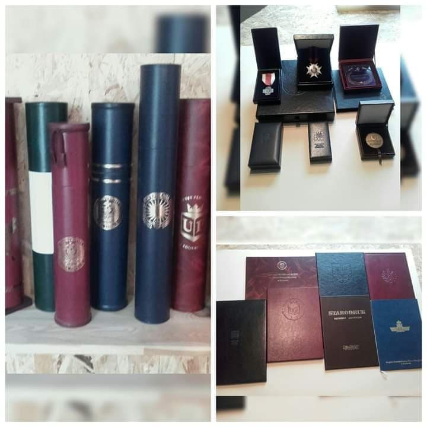

Nasze produkty swoim charakterem i wyglądem nawiązują do dawnych ręcznie wykonywanych opraw, pudełek, tub i ksiąg pamiątkowych.
Tylko w 2016 roku Papież Franciszek zabrał ze Sobą kilka Naszych wyrobów. To między innymi: Księgi Pamiątkowe wykonane na zlecenie Miasta Wieliczka oraz piękne pudełko z odlewem klucza do bram Miasta Krakowa.
Nasze pudełka, teczki, tuby okolicznościowe są wręczane wybitnym sportowcom, między innymi przez Urząd Marszałkowski oraz Fundację Brata Alberta oraz wybitnym Polakom na wszystkich imprezach okolicznościowych organizowanych przez Urząd Miasta Krakowa. Cieszymy się zaufaniem Naszych klientów.
Zakres prac wykonywanych na pracowni obejmuje również Księgi Pamiątkowe, Księgi Kondolencyjne, piękne personalizowane kalendarze, notesy, futerały na książki.
W tym roku poszerzyliśmy ofertę o prace konserwatorskie - stare gazety, dyplomy, nekrologi oraz perełki, tzw. "trupy introligatorskie". Odnowiliśmy i złożyliśmy w całość ponad stuletnią księgę , która przybyła do Nas w stanie rozsypu...
Stwórz swoją własną, niepowtarzalną bibliotekę!!
Ulubiona książka może swoim wyglądem przypominać dzieło sztuki. Nasza oferta obejmuje sklejanie na falce i ręczne szycie na hefladzie co przedłuża "żywotność" książki. Oprawa nie tylko pięknie wygląda, ale dodatkowo wzmacnia książkę - jak w Bibliotece Sejmowej, która przez długie lata korzystała z Naszych usług.
PIĘKNIE WYKONANA KSIĄŻKA MOŻE BYĆ BARDZO DOBRĄ INWESTYCJĄ.
W pracach wykorzystujemy różne materiały - tworzywa, nowaluxy. karton artystyczny, ale znajdą Państwo również skórę naturalną.
W zależności od potrzeb i oczekiwań klientów, wychodząc na przeciw, ofertę usług dobieramy indywidualnie.
TY MASZ POMYSŁ, A MY GO REALIZUJEMY.
Uczyń Swoją uroczystość jeszcze bardziej niezapomnianą - Ślubna Księga Gości, teczki z kartonu artystycznego jako oprawa podziękowań. W tej pracy ograniczeniem jest tylko wyobraźnia.
Tylko w tym roku, w samym Krakowie prawie 3000 tys inżynierów i magistrów odebrało dyplomy oprawiane przez Naszą firmę.
Nie kupuj oprawek na bazarku!!
Jesteś szefem organizacji, przewodniczącym klubu? Zadzwoń, przyjdź, dowiedz się jak możemy zindywidualizować Twoje legitymacje.Jest to również forma ochrony - indywidualne tłoczenia - Twoja Nazwa, Twoje Logo, Twój druk.
JESTEŚMY FIRMĄ Z PONAD 50- LETNIĄ TRADYCJĄ, ALE CECHUJE NAS ŚWIEŻY ZAPAŁ.
JESTEŚMY Z KRAKOWA, ALE WSPÓŁPRACUJEMY Z CAŁĄ POLSKĄ.
JESTEŚMY POLSKĄ FIRMĄ RODZINNĄ, A ŻADEN KLIENT NIE JEST DLA NAS ANONIMOWY.

Czytaj dalej
Firma Starodruk Rękodzieło Artystyczne powstała na skutek reorganizacji Spółdzielni Pracy Rękodzieła Artystycznego "Starodruk" Kadra nowej firmy oparta jest na byłych, sprawdzonych oraz posiadających najwyższe kwalifikacje, pracownikach Spółdzielni. Nasza oferta skierowana jest zarówno do klientów dotąd z nami współpracujących jak i do tych z Państwa którzy nie korzystali jeszcze z naszych usług. Oferta nasza obejmuje zarówno prace związane z rekonstrukcją i konserwacją cennych książek i rękopisów przeznaczonych dla bibliotek czy muzeów jak i artystyczne oprawy literatury pięknej , reprintów, albumów, nut i edycji bibliofilskich. Podejmujemy współpracę z wydawnictwami celem tworzenia niepowtarzalnych opraw nawiązujących do charakteru dzieła i epoki, która je zrodziła.
W naszych projektach uwzględniamy również indywidualne oczekiwania klientów przygotowując księgozbiory na specjalne zamówienie. Drugim ważnym działem produkcji naszej firmy jest poligrafia. Pracownicy mają duże doświadczenie w wytwarzaniu opraw dokumentów. Oprawiane przez nich dokumenty znajdują się w najważniejszych instytucjach państwowych, wyższych uczelniach, czy ważnych instytucjach kultury narodowej. Długoletnia współpraca z większością naszych klientów pozwala mieć pewność, że oprawy wykonane dla naszych klientów będą zrobione w sposób absolutnie profesjonalny. Zapraszamy do współpracy.
50 lat tradycji Starodruku na Kazimierzu. Zaczęło się we wrześniu 1950 r. Do centrali Przemysłu Ludowego i Artystycznego zgłosił akces zakład introligatorski Roberta Jahody, założony w 1886r. i oprawiający książki przy ul.Gołębiej 4. Właściciel,syn założyciela Roberta Jahody-Żółtawskiego przystąpił do Centrali, która była protoplastą dzisiejszej "Cepelii". Status przedsiębiorstwa państwowo-spółdzielczego pozwalał na dalszą działalność szacownego w Krakowie rzemiosła introligatorskiego. W lutym 1951r. do Centrali przystępuje spółka Legiżyński-Gadacz z ulicy Powiśle 9. Od tegoż roku znany zakład introligatorski Ludwika Bażeli z pl. Kleparskiego 9 także grupuje się w centrali. Jak tradycja nakazuje syn, też Ludwik, poszedł w ślady ojca. Spółdzielnia miała rodowód rzemieślniczy i nic z tego nie straciła do końca swej działalności - usunęła nawet ze swej nazwy słowa "przemysł artystyczny" a powróciła do "rękodzieła artystycznego". Z punktu widzenia wielkości zatrudnienia nie była potentatem. W październiku 1954 r. gdy powstawała, liczyła 40 osób; w chwili zakończenia działalności ok. 50 (obrazek2). Wśród szczególnie cennych zabytków polskiej kultury, którym przywrócono dawną świetność jest rękopis III części "DZIADÓW" A.Mickiewicza ze zbiorów Biblioteki Jagiellońskiej oraz rękopis J.Słowackiego. Ich rekonstrukcja i renowacja trwała 12 lat.
 Nietypowe oprawy albumów i książek to kolejna, obok ratowania skarbów narodowej kultury, funkcja naszej placówki. Spółdzielnia posiadała także dział kaletnictwa. Od 1956r. introligator Stanisław Sokołowski wykonywał portmonetki i portfele czyli tzw. galanterię wiedeńska płaską. W okresie modnego ujednolicenia profilu produkcji spółdzielcy nie zrezygnowali z tych wyrobów. Posiadali na nie 31 znaków jakości. Obecnie, firma Roman Kozień Starodruk Rękodzieło Artystyczne zatrudniająca byłych pracowników Spółdzielni znajdującej się w obecnie w stanie likwidacji, kontynuuje tradycje krakowskiego rzemiosła introligatorskiego a w szczególności dotyczące konserwacji starodruków, artystycznej oprawy i współpracy z uczelniami i urzędami państwowymi.
Wykonujemy rekonstrukcje zabytkowych rękopisów i starodruków także konserwujemy zabytki piśmiennictwa polskiego i obcego z archi, bibliot, muzeów i zbiorów prywatnych. Całość prac wykonywana jest ręcznie przy zastsowaniu najnowszych osiągnięć naukowych w tej dziedzinie. Nasi pracownicy mają duże doświedczenie zdobyte przy renowacji wielu zabytkowych ksiąg.
Współpracując z oficynami wydawniczymi tworzymy niepowtarzalne projekty artystycznych opraw, nawiązujące do charakteru dzieła i epoki, która je zrodziła. Użyte technologie i najlepsze materiały powiążane z fachowym wykonawstwem pozwalają na właściwe oddanie treści książek. Nasza oferta obejmuje zarówno wykonywanie opraw tradycyjnych jak i współczesnych.
Podejmujemy się specjalistycznego rękodzieła w postaci ksiąg pamiątkowych, pudełek na medale i numizmaty, puzder na biżuterię. Przedmioty o szczególnej wartości dla odbiorcy wykonywane są ręcznie, zgodnie z najlepszymi wzorcami ich wykonania.
 W nawiązaniu do "ROZPORZĄDZENIA MINISTRA NAUKI I SZKOLNICTWA WYŻSZEGO Z DNIA 19 GRUDNIA 2008 r" w sprawie rodzajów tytułów zawodowych nadawanych absolwentom studiów i wzorów oraz świadectw wydawanych przez uczelnie, informujemy, iż nasza firma wykonuje min: suplement do dyplomu, świadectwo ukończenia studiów podyplomowych, świadectwo ukończenia studiów podyplomowych, świadectwo ukończenia kursu, teczka do suplementu. Ponadto informujemy, iż jesteśmy w stałym kontakcie z Ministerstwem Edukacji Narodowej w sprawie dotyczącej zmiany dyplomu w ubiegłym roku wykonywaliśmy wzory nowego dyplomu w uzgodnieniu z Ministerstwem Nauki i Szkolnictwa Wyższego przekazując wszystkie uwagi do Departamentu Spraw Studentów i Doktorantów). Informujemy również, że w związku ze zmianą w Ustawie Prawo Zamówień Publicznych z dnia 13.04.2007r. jest możliwe zawarcie Umowy bezpośredniej z naszą Spółdzielnią na wykonanie dyplomów ukończenia studiów wyższych na kwotę nie przekraczającą 14.000 euro. Jednocześnie prosimy Państwa o powiadomienie naszej Spółdzielni o ewentualnych przetargach. Oprócz opraw dyplomów wykonujemy również oprawę legitymacji studenckich, indeksy studenckie.
 Wykonujemy okolicznościowe oprawy na dokumenty, dyplomy, świadectwa, zarówno według indywidualnego zamówienia klienta, jak i spośród kilkudziesięciu gotowych wzorów.

Starodruk Roman Kozień
GODZINY OTWARCIA: Pon - Pt: 06:00 - 14:00
{kind=link}
{kind=link}
{kind=link}
{kind=link}
{kind=link}
{kind=link}